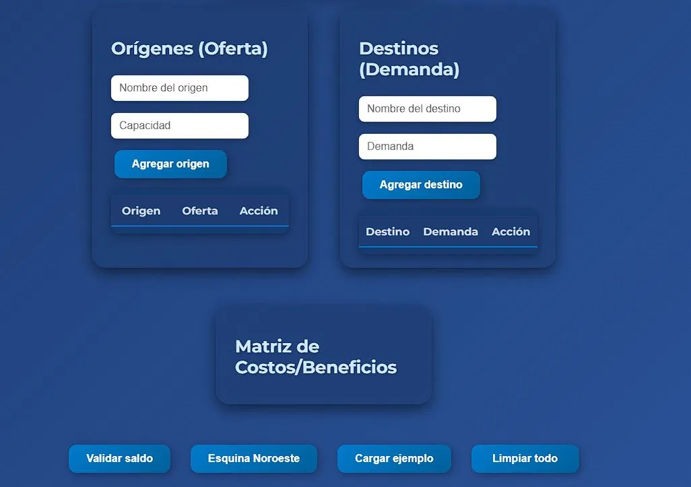

About Me
My name is Lina Padilla, and I am passionate about innovation, design, and programming. I enjoy exploring creative solutions and leveraging technology to build impactful projects.
Skills
Projects
I developed a transportation model using Python, HTML, and JavaScript that allows users to input supply and demand data. The application calculates the minimum transportation cost using the Northwest method, providing an efficient solution for optimizing logistics and distribution problems.
